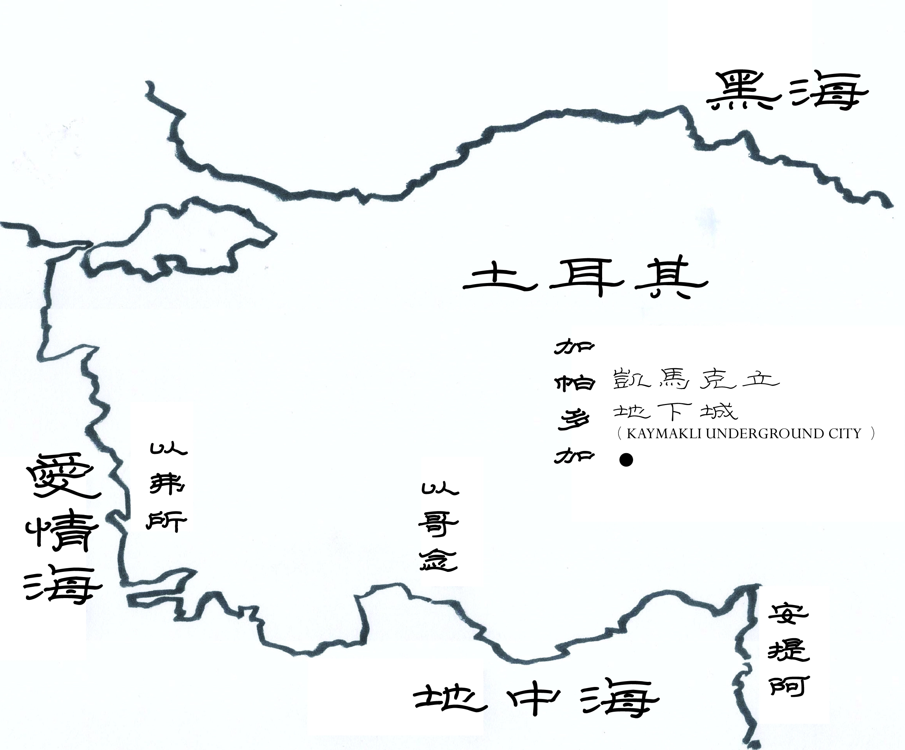

地名介紹

凱馬克立地下城
（卡帕多細亞希臘語：Ανακού）
位於卡帕多西亞的地下城，共8層，最多可容納3,000人。也是本書主角穿越到達的地下城。
位於卡帕多西亞的地下城，共8層，最多可容納3,000人。也是本書主角穿越到達的地下城。
代林庫尤地下城
（卡帕多細亞希臘語：Μαλακοπή）
位於卡帕多西亞，是世界最大的地下城，大概有20樓深（85米深）最多可容納20,000人。在凱馬克利地下城的南方，並有通道互相連接兩個地下城。城市於1965年被人發現，其後開始對遊客開放。考古學家估計，該城建於約公元8世紀，由當地的基督徒興建，目的是逃避搶劫及入侵。
位於卡帕多西亞，是世界最大的地下城，大概有20樓深（85米深）最多可容納20,000人。在凱馬克利地下城的南方，並有通道互相連接兩個地下城。城市於1965年被人發現，其後開始對遊客開放。考古學家估計，該城建於約公元8世紀，由當地的基督徒興建，目的是逃避搶劫及入侵。
以弗所
（希臘語：Ἔφεσος；英語：Ephesus；土耳其語：Efes）又譯愛菲索斯或艾菲索斯，天主教《思高聖經》譯厄弗所。
是古希臘人在小亞細亞建立的一個大城市，位於加斯他河注入愛琴海的河口（今天屬於土耳其）。
是古希臘人在小亞細亞建立的一個大城市，位於加斯他河注入愛琴海的河口（今天屬於土耳其）。
安提阿
（阿拉伯語：انطاكية（Anṭākyä），來自希臘語：Ἀντιόχεια（Antiókheia或Antiócheia），敘利亞語：ܐܢܛܝܘܟܝܐ（Anṭiokia））又譯安塔基亞。
是土耳其哈塔伊省的一座城市，靠近敘利亞邊境。古時稱為安提阿，在基督教歷史上佔據重要地位，是耶穌的追隨者第一次被叫做「基督徒」的地方。
是土耳其哈塔伊省的一座城市，靠近敘利亞邊境。古時稱為安提阿，在基督教歷史上佔據重要地位，是耶穌的追隨者第一次被叫做「基督徒」的地方。
以哥念
（土耳其語：Konya，土耳其語發音：[ˈkon.ja]；古希臘語：Ικόνιον，羅馬化：Ikónion；拉丁語：Iconium）又譯孔亞或科尼亞，《聖經和合本》譯為以哥念。
是土耳其科尼亞省的首府，城市人口超過100萬，是土耳其宗教最保守的大都會之一。
是土耳其科尼亞省的首府，城市人口超過100萬，是土耳其宗教最保守的大都會之一。
（摘自維基百科）